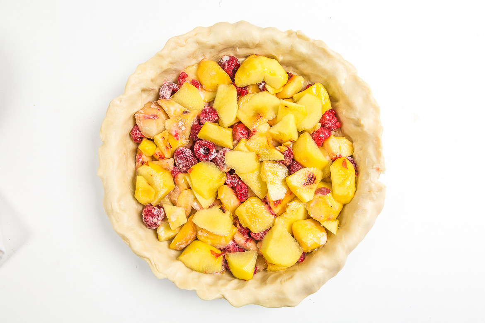
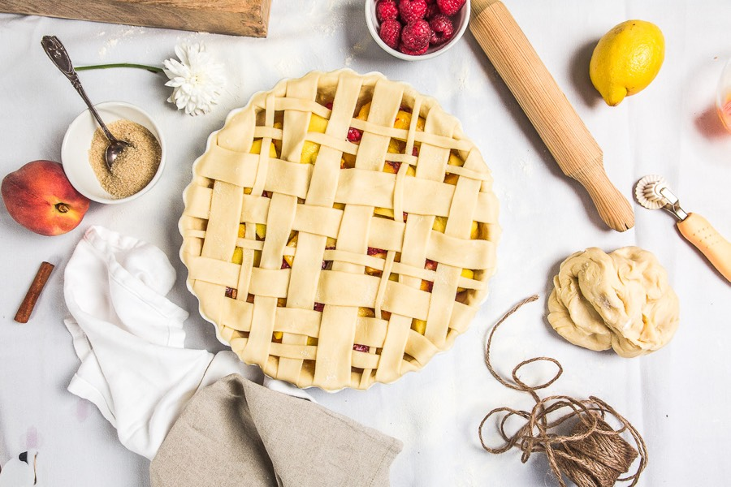

Tarte aux pêches et framboises

Aujourd’hui je vous retrouve à nouveau avec une recette de tarte!! Des tartes, des tartes, encore des tartes!! Oui mais si j’attends trop cette tarte aux pêches et framboises ne sera plus d’actualité et vous ne pourrez pas la refaire chez vous alors c’est pour la bonne cause!
La bonne nouvelle c’est que si vous ne trouvez plus de pêches (j’en doute mais sait-on jamais), ou plus de framboises vous pouvez vous contenter de faire cette tarte seulement aux pêches ou seulement aux framboises! Bref c’est comme vous voulez, le mieux étant évidement que vous vous dépêchiez d’aller faire courses pour vous jeter sur les dernières jolies framboises restantes, idem pour les pêches (et/ou nectarines car c’est sensiblement la même chose). Après l’article expliquant comment faire un quadrillage sur une tarte et la première tarte quadrillée aux mûres sur le blog, il fallait bien que je vous propose une seconde garniture! Cette fois-ci peu de photos pour illustrer l’article car j’ai eu à peine le temps de la faire cuire qu’il fallait déjà partir! A la fin du repas il n’en restait plus une miette de cette tarte aux pêches alors je suppose qu’elle a dû plaire aux heureux élus qui ont pu la déguster ;). Les pêches (ou nectarines) ainsi que les framboises (il y a aussi les fraises) sont mes fruits préférés, alors pour la garniture c’était parfait pour moi. Comme pour la tarte aux mûres, ici je n’ai presque pas rajouté de sucre du tout (et oui, n’oubliez pas que les fruits sont déjà sucrés) ! Juste un peu de jus de citron, de la maïzena et du sucre vanillé car je n’avais plus de gousse ni d’extrait et c’était juste ce qu’il fallait. Vous pouvez ajouter du sucre évidement si vos fruits ne sont pas trop sucrés mais n’ayez pas la main lourde ça ne sert à rien (80-100g max)! J’ai un peu varié le quadrillage sur celle-ci mais si j’avais eu plus de temps je pense que j’aurais fait encore plus différent de la première mais ce sera pour la prochaine fois alors ne m’en voulez pas!! Je vous laisse à présent découvrir la recette de cette tarte aux pêches et je vous souhaite à tous une bonne fin de semaine (mais qui sait je reviendrai peut-être par ici avant le week-end!!) A très vite!
Enregistrer
Enregistrer
Enregistrer
Ingrédients
- Pâte brisée - 2
- Maïzena - 3 càs
- Jus de citron - 3-4 càs
- Sucre semoule (ou sucre vanillé-1sachet) - 80g
- Pêches (ou nectarines ou comme ici un mix des deux) - 400g
- Framboises fraîches (ou si ce n'est plus la saison des surgelées) - 300g
- Jaune d'oeuf - 1
- Eau - 1 càc
Instructions
- Préchauffer le four à 180°
- Laver vos fruits et éplucher vos pêches (ou comme moi un mix de pêches et de nectarines jaunes)
- Dans un saladier, verser les fruits et ajouter la maïzena
- Mélanger et ajouter le sucre et le jus de citron
- Déposer votre première pâte à tarte dans le fond de votre moule
- Piquer le fond de tarte à l'aide d'une fourchette
- Verser le mélange de pêches et de framboises dans le fond de tarte
- Commencer le quadrillage de la tarte (clic)
- Une fois le quadrillage terminé, mélanger le jaune d’œuf avec un peu d'eau
- A l'aide d'un pinceau, appliquer le jaune d’œuf sur la tarte
- Enfourner 40-45 minutes à 180°
- Se déguste tiède ou froide. Bon appétit !


Les tips de la communauté
Un coup de cœur unanime. Les commentaires célèbrent l'association pêche-framboise, la présentation magnifique et les photos splendides. Plusieurs testeurs confirment que la tarte est délicieuse avec une garniture équilibrée.
Astuces
- L'acidité des framboises se marie parfaitement avec le côté sucré des pêches
- La pâte maison fait toute la différence pour un rendu professionnel
- Les fruits trop mûrs ne posent pas problème pour la confection
- Utiliser des fruits frais du marché ou des producteurs locaux
- La tarte convient parfaitement pour les occasions spéciales grâce à son aspect
Variantes suggérées
- Possibilité d'utiliser d'autres fruits rouges en remplacement des framboises